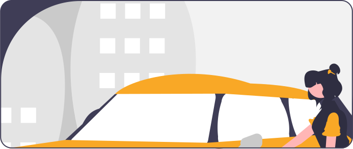

Preposiciones #1

“Llévame al museo, por favor."
-
a
se utiliza para indicar dirección o destino, y también se usa para señalar el objetivo de una acción
Voy a la tienda.
Todos los caminos conducen a Roma. -
de
se usa para indicar posesión, origen, material, relación, y muchas otras relaciones
El libro de Juan.
Soy de México. -
en
se usa para indicar ubicación en el espacio o el tiempo
Vivo en una ciudad pequeña.
La canción está en la radio. -
para
se usa para indicar destino, finalidad, propósito o dirección
Salimos para el cine.
Compré un regalo para mi madre. -
por
tiene varios usos, incluyendo el sentido de causa, motivo, medio, sustitución y más
Lo hice por ti.
Viajamos por carretera. -
con
se usa para indicar la compañía o asociación de algo o alguien
Salí a pasear con mis amigos.
Prefiero mi café con azúcar. -
sin
se usa para indicar la ausencia de algo o alguien
No puedo cocinar sin ingredientes.
Caminamos sin parar. -
sobre
indica posición en la superficie o tema de conversación
El techo está sobre la casa.
Vamos a hablar sobre el proyecto. -
hasta
indica el límite o punto final en el tiempo o el espacio
Trabajaré hasta las cinco de la tarde.
Corrimos hasta el final de la calle. -
tras
se utiliza para indicar que algo ocurre después de otra cosa o detrás de algo
Llegaron tras la puesta de sol.
El gato está tras la cortina. -
vía
se usa para indicar el medio o la ruta utilizada para llegar a un lugar o lograr algo
Llegamos a Nueva York vía avión.
Obtuvimos la información vía internet. -
según
se utiliza para referirse a una fuente o autoridad que respalda una afirmación o información
Según el informe, el producto es seguro.
Actúa según tu conciencia.
Contracciones de preposiciones:
Combinaciones de una preposición y un artículo que se fusionan para formar una forma contraída.
a + el = al
Ejemplo: Voy al parque.
de + el = del
Ejemplo: El libro es del profesor.